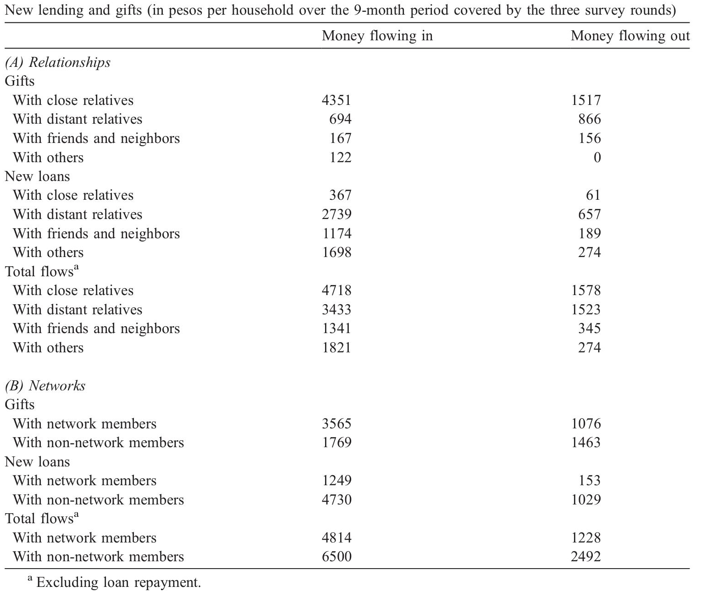
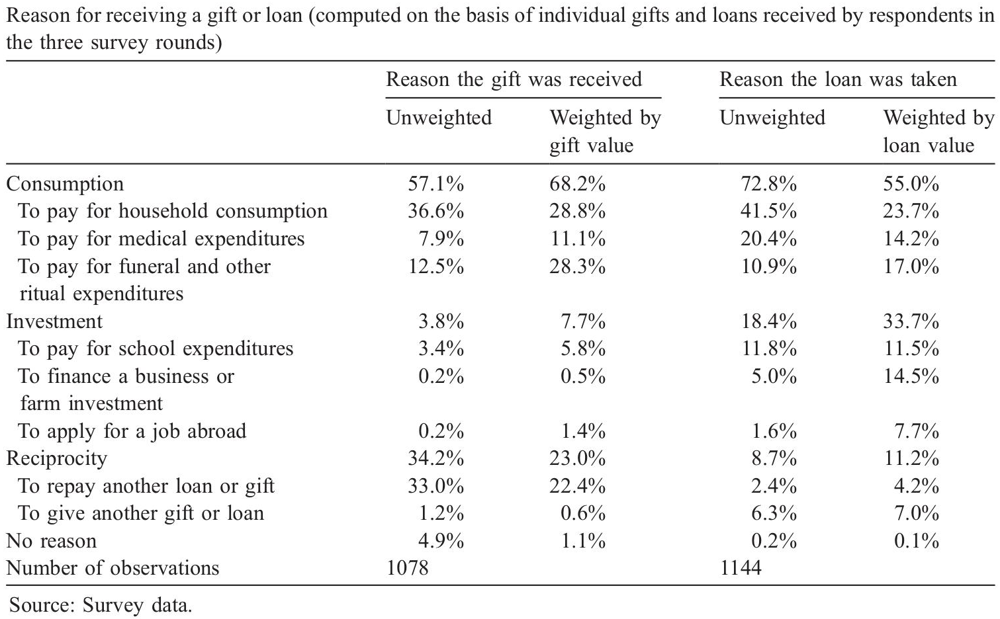
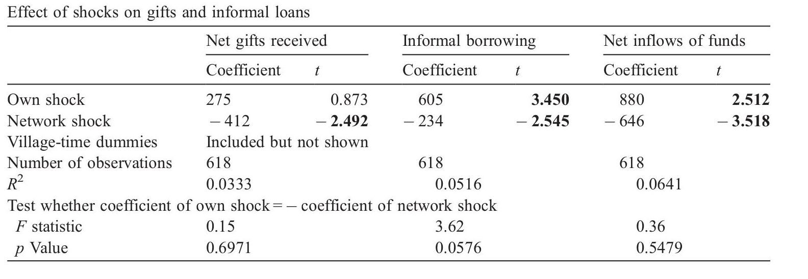
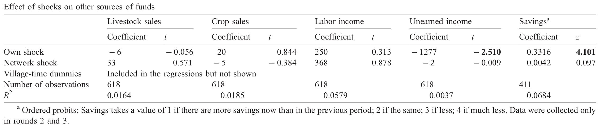
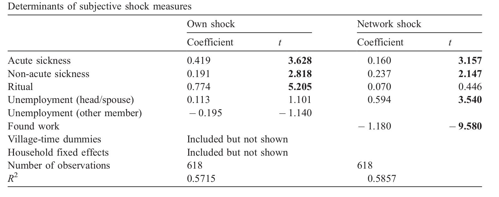
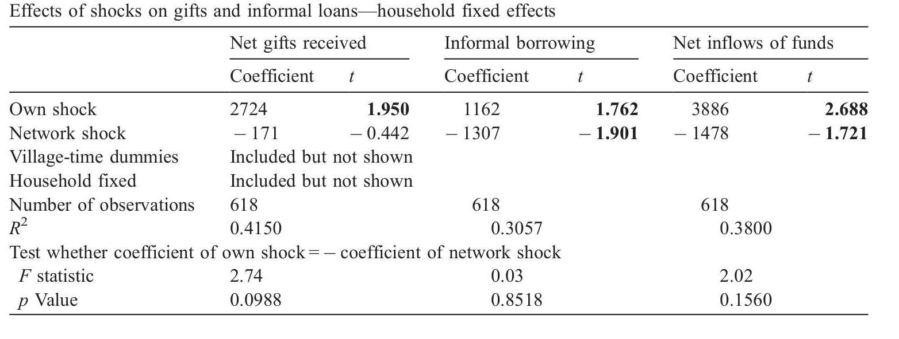
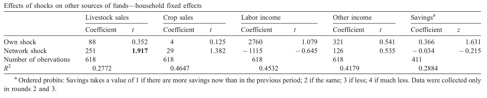

Aims to understand the process of risk sharing ...
- Risk Sharing: Informal institutions allow household to counter the impact of income variation. However process of risk sharing not explicitly detailed in literature
- Transfers and risk: Aims to investigate which method of transfers (assets, gifts and informal loans) serve to efficiently share risk
- Gaps in literature: Social Networks play an important role in risk sharing, however gaps in literature on the topic. A primary objective
... through the flow of informal credit, gifts and transfers
- If risk sharing is efficient, consumption should be unaffected by variations in income. i.e. shortages in income met through increased borrowings / gifts or through changes in household assets
- In the presence of open social networks characterised by frictionless transfers, efficient sharing of risk. However issues if transfers are not frictionless. (Friction ~ Cost to be Kind)
-
In such a case, basic model of risk sharing given by;
$$g_{s,t}^i + b_{s,t}^i + \Delta w_t^i = \alpha_0 + \alpha_1 z_{s,t}^i + \alpha_2 z_{s,t}^{P_i} + \alpha_3 X_t^i + \alpha_4 X_t^{P_i} + \alpha_4 V_t^i + \epsilon_t^i$$
... through the flow of informal credit, gifts and transfers
- $\alpha_2$, i.e. coefficiant of network shock, will be 0 if risk is shared efficiently, but > 0 in presence of friction.
- Authors also check for wether shock are partially or fully insured through informal gifts and transfers
- Finally, they investigate whether altruism is the major reason behind the risk-sharing practices, or self-interest behaviour.
Set among 206 households in rural Philippines
- Survey conducted on 206 households randomly selected after a census. Three interviews were held with the housholds between July 1994, (after rice harvest) and March 1995, (after new crop has been transplanted).
- Respondents asked to list "insurance networks". Detailed characteristics of the households as well as its network partners were collected.
- In addition, a subjective "shock" variable was measured ranging from -2 (very good?) to +2 (very bad?) based on their subjective weighting of the shocks.
Gifts come from families while loan from "non-network" members

Reciprocity an important factor in informal credit

Results I: Baseline Regression

Results I: Impact of shock on household assets (sources of funds)

Problems!
-
Endoginity Bias: Shocks might have led to creation of networks
Solution: Autocorrelation checks -
Endoginity Bias: Shocks might be meausered according to expectation of
help. If respondedts assume help is easily available, individual shock
component decreases
Solution: Instrumental Variable Approach? -
Unobserable fixed effects in households during data collection.
Soution: Fixed effects regression.
Instrumental Variable

Results II.0: Fixed Effects Regression

Results II.0: Impact of shock on household assets (sources of funds)

Results II.0: Impact of specific shocks

Conclusion: Risk shared amongst small pool primarily for consumption
- Consumption smoothing an important morivation for gifts and transfers, but are unable to share risk. Also shortfall in the average expenditure and expected inflows
- Not all risks are equally "insured". Crop and livestock sales not influenced by shocks.
- "Novely of paper" lies in exploring the sharing of risk within a small pool of friends and families.
Thats all folks!
Presentation: devvartpoddar.github.io/RiskSharing/
Github repo: Risk Sharing in Rural Philippines